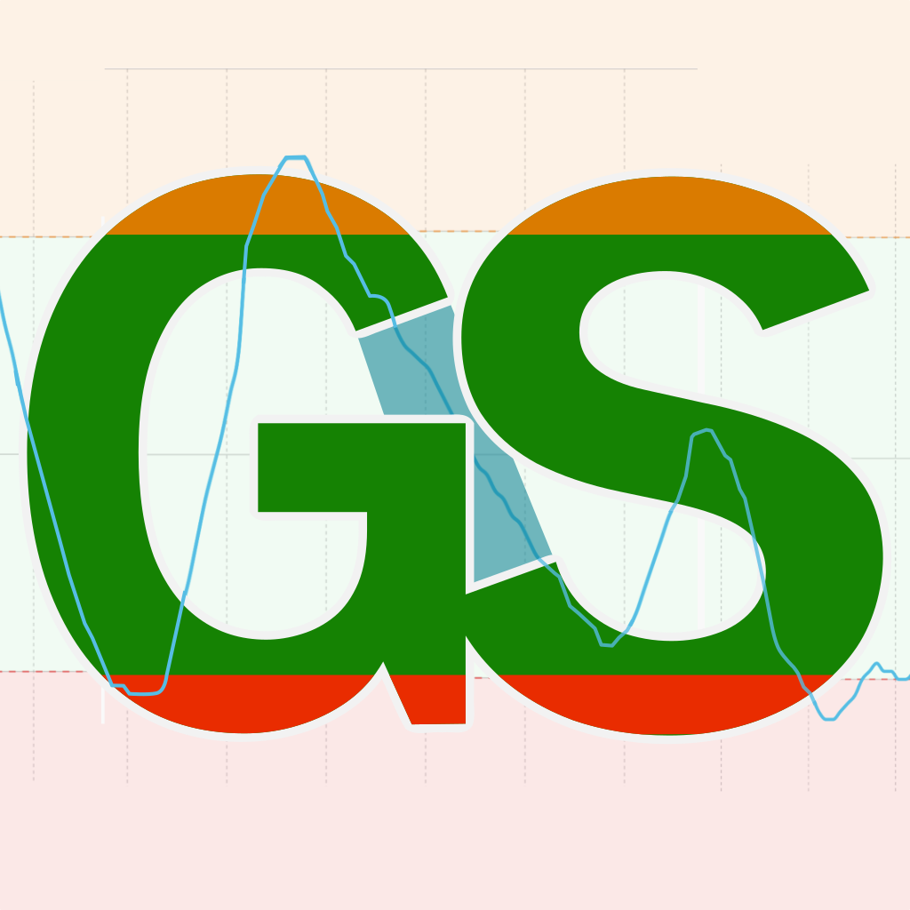

VIBUG · June 13, 2026
GlucoSound
Mon Spelly (they/them)
2017
Twin graph.
My roommate's brand-new Dexcom G6.
Six hours of his blood sugar on screen.
VoiceOver's entire description:
two words.
Problem
The data is there.
VoiceOver hits a wall.
- The trend chart is what keeps you safe.
Where is your glucose heading? - That chart is invisible to VoiceOver.
The tools to fix it have existed since 2021. - Diabetic retinopathy is the leading cause of blindness.
CGM users and blind users are often the same people.
Why now
New G7 still lacking.
AI + anger enable me.
2017
Started working on this for my roommate.
Never got past the concept stage.
Never got past the concept stage.
Feb 2026
A friend gets the new Dexcom G7.
The chart is still not accessible.
The chart is still not accessible.
Mar 2026
A few weeks of active work.
A working prototype.
A working prototype.
GlucoSound
Accessible sonified charts
- Platform
- iPhone · iOS 17+
- Data source
- Apple Health or Dexcom Share
- Screens
- Chart · Explore
Summary · Settings - Cost
- Free
- Design principle
- Every element labeled. No information locked behind vision.
How it works
Data becomes sound.
- Sonification: mapping data to audio instead of visuals
- Drag a finger across the chart. Pitch follows your glucose in real time.
- Pitch is mapped directly to glucose value.
- Below range: tremolo. Above range: vibrato.
- Lift your finger: VoiceOver speaks value and time.
Chart View
The home screen. Glucose history, spoken.
- 12 columns, each announces time, values, and direction
- Select time range, check past values
- Custom logic for chart labels
video_1_chart_view.mov
Explore
Scrub chart to hear glucose as sound.
- High sugar, high pitch
- Out of range sounds noticeably different
- Lift your finger: value and time, spoken
- Six instruments, made to sound good in public
video_2_explore_view.mov
Summary
Turning glucose data into plain sentences.
- Average, time in range, highs and lows
- What happened, what to watch, what went well
- No AI. Rule-based logic to prevent false statements.
- Interprets a chart, so needs to be reliable
video_3_summary.mov
Settings
Customizable sound to increase access.
- Low and high thresholds, with clinical defaults
- Adjust instrument sound, preview it live
- Speech, haptics, volume, default time range
video_4_settings.mov
Where things stand
Launch blocked.
Since the app touches health data,
I need to go about this carefully.
It needs real testing by blind CGM users
before I feel confident releasing it.
How you can help
Four things
- 1 Test it. Join the TestFlight beta. Link in the Zoom chat now, and on the VIBUG mailing list after.
- 2 Know a blind CGM user? Send them my way. Word of mouth helps a lot, not easy to reach testers.
- 3 Have a clue how I can fund my work? Let me know. I want GlucoSound to remain free, but would also love to be able to sustain development.
- 4 Know medical device law or regulation? I could use guidance. Not sure where this app sits legally. Any intro helps!
Thank you
GlucoSound
Making blood glucose audible.
TestFlight
testflight.apple.com/join/1Ng5FNJY